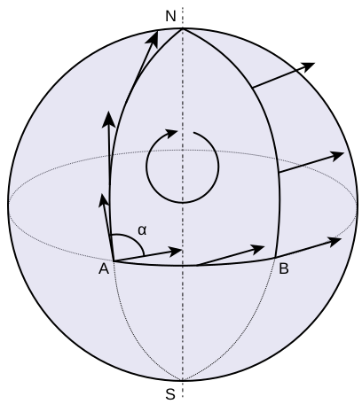
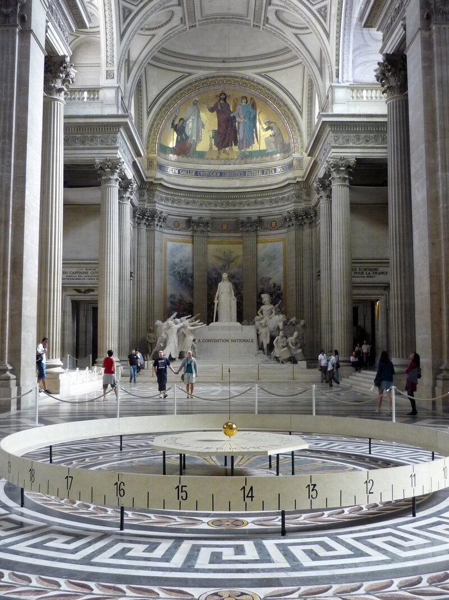

벡터를 옮기면 달라진다
출발 문제
당신이 지금 북극점에 서 있다고 상상해 보자. 손에는 남쪽을 가리키는 화살표가 들려 있다. 이제 아주 중요한 규칙 하나를 정한다: 이 화살표를 절대로, 어떤 이유로도 회전시키지 않겠다. 오직 "앞으로 밀기"만 허용한다. 화살표가 가리키는 방향을 내 의지로 돌리는 행위는 금지다.
이 규칙을 지키며 걸어가 보자. 먼저 경도 0° 자오선을 따라 적도까지 내려간다. 화살표는 여전히 남쪽을 가리킨다 — 여기까지는 자연스럽다. 이제 적도를 따라 동쪽으로 90° 이동한다. 적도 위에서 화살표를 회전시키지 않고 옮기면, 화살표는 계속 남쪽을 가리킨다(적도에서 "남쪽"은 적도와 수직 방향이다). 마지막으로 경도 90° 자오선을 따라 다시 북극으로 올라온다. 화살표를 한 번도 회전시키지 않았으니, 당연히 원래 방향을 가리키고 있어야 하지 않을까?

놀랍게도, 화살표는 원래 방향에서 정확히 90° 돌아가 있다. 처음에는 경도 0° 자오선 쪽을 가리키던 화살표가, 이제는 방금 올라온 경도 90° 자오선 쪽을 가리킨다. 한 번도 회전시키지 않았는데 돌아간 것이다. 마술이 아니라, 평평한 바닥에서는 절대 일어나지 않는 이 현상은 구면이 휘어져 있기 때문에 벌어진다.
이 실험에서 한 가지만 바꿔 보자. 적도를 따라 90°가 아니라 180° 이동한 뒤 북극으로 돌아오면 화살표는 180° 돌아가 있다. 적도를 360° 전부 돌면 360°, 곧 원래 방향으로 돌아온다. 적도를 따라 간 거리가 두 배가 되면 경로가 둘러싼 면적도 두 배가 되고 회전량도 두 배가 되니, 회전량이 면적에 비례한다는 느낌이 든다. 이 직감은 정확히 맞다.
패턴
평면 위에서 화살표를 들고 어떤 경로를 따라 걸어간 뒤 출발점으로 돌아오면, 화살표는 반드시 원래 방향을 가리킨다. 경로가 직선이든 구불구불하든, 크든 작든 상관없다. 이것은 평면의 가장 기본적인 성질이다 — 너무 당연해서 평소에는 의식하지 못한다.
그런데 구면 위에서는 이것이 깨진다. 벡터를 “회전 없이” 옮기는 행위, 즉 평행이동의 결과가 경로에 의존한다. 같은 출발점에서 같은 도착점으로 가더라도, 어떤 경로를 택하느냐에 따라 화살표의 최종 방향이 달라진다. 이 경로 의존성이야말로 "공간이 휘어져 있다"는 것의 수학적 본질이다.
더 놀라운 패턴이 있다. 구면 위에서 닫힌 삼각형 경로를 따라 평행이동한 벡터의 회전각은, 그 삼각형이 둘러싼 면적과 정확히 같다(단위 구면에서). 이 관계는 삼각형뿐 아니라 어떤 닫힌 경로에 대해서도 성립한다: 회전각 = 둘러싼 영역의 곡률의 적분. 곡률은 이 회전의 "밀도"인 셈이다.

이 현상은 놀랍도록 물리적이다. 1851년 파리 판테온에서 레옹 푸코가 매단 거대한 진자는 진동면이 하루 동안 천천히 돌아가는 모습을 보여 주었다. 지구 자전의 증거로 유명하지만, 기하학적으로 보면 평행이동의 홀로노미다. 땅 위에서 보면 진자의 진동면이라는 "벡터"가 위도선이라는 "닫힌 경로"를 따라 하루에 한 바퀴 평행이동된다. 그 결과 진동면은 땅에 대해 하루에
정리
닫힌 경로를 따라 평행이동한 벡터의 회전량은, 그 경로가 둘러싼 영역의 곡률의 적분과 같다. 이것을 홀로노미 정리라 부르며, 가우스-보네 정리의 국소판이다.
수식으로 쓰면, 곡면 위의 닫힌 곡선
반지름 1인 구면에서는 어디서나
이 정리가 말하는 것은 심오하다: 곡률은 홀로노미의 무한소 버전이다. 닫힌 경로를 점점 작게 줄여 한 점으로 수축시키면, 면적당 회전량의 극한이 그 점에서의 곡률이 된다. 거꾸로, 넓은 영역의 홀로노미는 각 점의 곡률을 모두 합산한(적분한) 것이다. 국소적 정보(곡률)와 전역적 정보(홀로노미)가 적분으로 연결되는, 미분기하학의 가장 아름다운 관계 중 하나다.
고차원으로 가면 사정이 좀 더 복잡해진다. 2차원에서는 회전량이 하나의 각도로 표현되지만,
따라 계산해 보기 — 위도선을 한 바퀴 돌면 화살표는 얼마나 돌아가나
북극에서 잰 각도(여위도)가
북위 60° 위도선이면
푸코 진자는 이 계산을 땅의 눈금으로 본 것이다. 위도선을 따라 걸으면 “동쪽” 방향 자체가 한 바퀴(
가 된다. 북위 60°에서는 하루(항성일 약 23.93시간)에
정의
- 평행이동 (방향 택배 / Direction Shipping) — 접속을 사용해 벡터를 경로를 따라 “회전 없이” 옮기는 것. 수학적으로는, 곡선
를 따라 벡터장 가 을 만족하도록 옮기는 것이다. 좌표로 풀어 쓰면 아래의 1계 연립 미분방정식이 되고, 출발점의 벡터만 정하면 경로 위의 벡터가 하나로 정해진다. 직관적으로는 접선평면 위에서 벡터를 “그냥 밀고” 다시 곡면에 사영하는 과정의 극한이다.
성분이 변하는 속도
- 홀로노미 (되돌아옴의 어긋남 / Return Discrepancy) — 닫힌 경로를 따라 평행이동한 벡터의 최종 회전량. 평평한 공간에서는 항상 0이지만, 휘어진 공간에서는 경로가 둘러싼 곡률에 비례하여 어긋난다. 곡면이 휘어져 있다는 것의 가장 직접적인 측정이다.
- 홀로노미 군 (어긋남의 모임 / Group of Return Discrepancies) — 한 점에서 가능한 모든 닫힌 경로에 대한 홀로노미의 집합. 이것은 군(group) 구조를 가지며, 매니폴드의 기하학적 성질을 놀라울 정도로 많이 결정한다. 예를 들어 홀로노미 군이
이면 칼라비-야우 매니폴드이다.
핵심 인물과 일화
툴리오 레비-치비타 — 평행이동의 발명 (1917)

크리스토펠 기호는 1869년부터 존재했지만, 거의 50년간 순수하게 계산 도구로만 쓰였다. 이 기호들에 기하학적 생명을 불어넣은 것은 레비-치비타의 1917년 논문 "평행이동의 개념(Nozione di parallelismo)"이다.
레비-치비타의 질문은 놀라울 정도로 단순했다: 곡면 위의 한 점에서 다른 점으로 화살표를 옮길 때, "회전시키지 않는다"는 것은 무슨 뜻인가? 평면에서는 자명하다 — 그냥 밀면 된다. 하지만 구면 위에서는? 화살표를 들고 곡면을 따라 걸어갈 때, 발밑의 곡면이 휘어져 있기 때문에 "그냥 밀기"가 정의되지 않는다.
레비-치비타의 답은 이것이었다: 곡면 위의 곡선을 따라 아주 짧은 구간마다, 곡면에 접하는 평면 위에서 벡터를 밀고, 다시 곡면에 사영하라. 이 과정의 극한이 평행이동이며, 크리스토펠 기호는 바로 이 사영 과정에서 나타나는 보정 항이었다.
레옹 푸코 (Léon Foucault, 1819–1868)

레비-치비타보다 66년 앞선 1851년, 파리의 물리학자 레옹 푸코는 판테온의 돔에서 길이 67미터의 진자를 매달았다. 진자의 진동면은 천천히 회전하며 하루 만에 원래 방향에서 벗어났다. 지구가 자전하고 있다는 직접적 증거였다.
하지만 이 실험에는 더 깊은 기하학이 숨어 있다. 푸코 진자의 진동면은 일종의 벡터이며, 땅에서 보면 지구의 자전 때문에 이 벡터가 위도선을 따라 "평행이동"된다. 땅에 대한 하루 회전각
푸코 자신은 이것을 미분기하학의 언어로 이해하지 못했다. 하지만 그의 실험은 "닫힌 경로를 따라 벡터를 옮기면 원래로 돌아오지 않는다"는 현상의 가장 극적인 물리적 시연이었다. 60여 년 뒤 레비-치비타가 수학적 형식을 갖추었고, 또 60여 년 뒤 마이클 베리(Michael Berry)가 같은 구조를 양자역학에서 재발견한다 — "베리 위상(Berry phase)"이라는 이름으로.
직접 움직여 보기
구면 위의 닫힌 경로를 따라 화살표를 평행이동하는 실험실이다. 경로를 구면 삼각형이나 위도선으로 고르고 크기를 바꾼 뒤 재생해 보자. 한 바퀴를 다 돌면, 위젯이 직접 계산한 회전각(측정)과 둘러싼 넓이로 예측한 값
연습문제와 같이 풀기
각 문제를 먼저 혼자 풀어 본 뒤, 바로 아래 세션에서 선생님과 두 학생이 어떻게 풀어 가는지 따라가 보자.
문제 1 — 원기둥을 한 바퀴 감는 원
확인 원기둥 옆면에서 둘레를 한 바퀴 감는 수평 원을 따라 화살표를 평행이동한다. 제자리로 돌아왔을 때 화살표는 몇 도 돌아가 있는가?
같이 풀기 세션 1
김민준360°요. 원기둥을 한 바퀴 빙 돌았으니까 화살표도 같이 한 바퀴 돌았겠죠.
이서연아니야, 0°. 원기둥은 종이를 말아서 만든 거라
선생님서연 학생, 그 적분의

이서연어… 원 위쪽도 아래쪽도 고리 모양 띠라서, 원이 감싸는 원판 같은 "안쪽"이 원기둥 위에 없네요. 정리의 조건이 성립하지 않아요.
선생님맞아요. 답 0°는 맞지만, 그 이유로는 말할 수 없어요. 다른 이유를 찾아볼까요? 민준 학생, 원기둥을 한 줄 잘라서 펴면 이 원은 뭐가 돼요?

김민준직사각형 위의 가로 선분이요! 평면에서 선분 따라 화살표를 밀면 방향이 그대로니까… 다시 말아 붙여도 0°네요. 제가 말한 360°는 원기둥 밖에서 본 방향이었어요. 곡면 위의 개미한테는 한 번도 안 돌린 거고요.
김민준조교님이 제 코드 보고 "좌표축을 같이 돌려놓고 값이 변했다고 하면 안 된다"고 한 거랑 같네요. 기준이 같이 돌아가면 안 된 것도 된 것처럼 보이잖아요.
이서연정리를 쓰기 전에 가정부터 확인해야지. 해석학 시간에 그린 정리를 구멍 난 영역에 그냥 썼다가 틀린 적 있는데, 똑같은 실수를 할 뻔했어.
문제 2 — 북위 60°의 화살표와 서울의 푸코 진자
계산 (가) 북위 60° 위도선을 동쪽으로 한 바퀴 평행이동한 화살표의 회전각
같이 풀기 세션 2
이서연(가)는 공식에 넣으면 끝이야.
김민준난 푸코 공식으로 했는데
선생님둘 다 멈춰 봅시다. 서연 학생, 북위 60°의 원은 북극에 가까워요, 적도에 가까워요?
이서연북극에 가까워요. 그러면 둘러싼 극지방이 작아서 회전도 작아야 하는데,
선생님좋아요. 민준 학생의

김민준그건… 땅에 대해 잰 진자 회전이요. 홀로노미는 원래 화살표랑 비교한 거고요. 그런데
선생님위도선을 한 바퀴 도는 동안 "동쪽"이라는 기준 자체가 한 바퀴 돌거든요. 같은 어긋남을 다른 자로 잰 거예요.
김민준채점 기준표랑 모범답안을 섞어서 본 거랑 같네요. 둘 다 맞는 숫자인데 뭐에 대한 숫자인지 안 적으면 조교가 0점 줘요.
이서연그럼 (나)는 땅 기준이니까
김민준numpy로 돌려도 같아.
문제 3 — 원뿔 꼭짓점에 숨은 곡률
킬러 중심각
같이 풀기 세션 3
선생님이번 문제는 천천히 가 볼게요. 먼저 답부터 걸어 볼까요?
김민준
이서연이번엔 원이 원뿔 위에서 꼭짓점 쪽 영역을 둘러싸. 그러니까
선생님그럼 정리는 잠시 두고, 문제 1에서처럼 펴서 봅시다. 원뿔을 펴면 뭐가 돼요?
김민준중심각
이서연부채꼴 안에서는 평면이니까 화살표를 그냥 평행하게 밀면 돼. 한쪽 가장자리에서 출발해서 다른 쪽 가장자리까지 가면… 그 두 가장자리는 말았을 때 붙는 선이고, 한쪽을
선생님부채꼴이 거의 원판에 가까워지면, 그러니까 중심각이
이서연거의 평면이요. 그러면 회전도

김민준잠깐, 그럼
선생님원이 둘러싼 영역 안에 딱 한 점, 꼭짓점이 있죠. 곡률이 옆면에 퍼져 있는 대신 그 한 점에 몽땅 몰려 있다고 보면 돼요. 꼭짓점이 품은 곡률의 총량이 바로 잘라낸 각

김민준아, 부채꼴에서 잘라 버린 조각만큼이 꼭짓점에 곡률로 뭉쳐 있는 거네요! 옆면을 아무리 뒤져도
이서연꼭짓점을 아주 작은 구면 조각으로 둥글게 깎으면

선생님그게 가우스-보네의 정신이에요. 곡률은 어디에 몰려 있든 총량을 속일 수 없어요.
김민준팀플 때 한 명이 발표 준비를 몰아서 다 한 거랑 비슷하네요. 다른 사람 기여도는 0이어도 팀 점수 총합은 그대로 나오잖아요.
연결되는 세계들
| 분야 | 연결 |
|---|---|
| 양자역학 | 베리 위상 = 매개변수 공간 위의 홀로노미 |
| 로보틱스 | 비홀로노믹 제약조건: 평행주차가 가능한 이유 |
| 제어이론 | 비가환적 제어 입력의 효과가 경로 의존적 |
| 게이지 이론 | 윌슨 루프 = 게이지 접속의 홀로노미 |
| 기계학습 | 매개변수 공간에서의 경로 의존적 학습 |